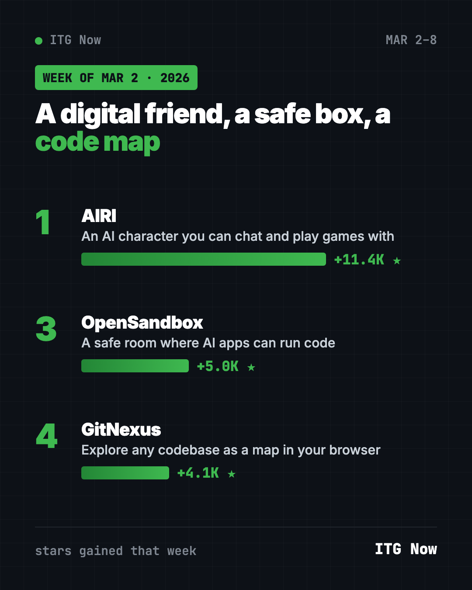
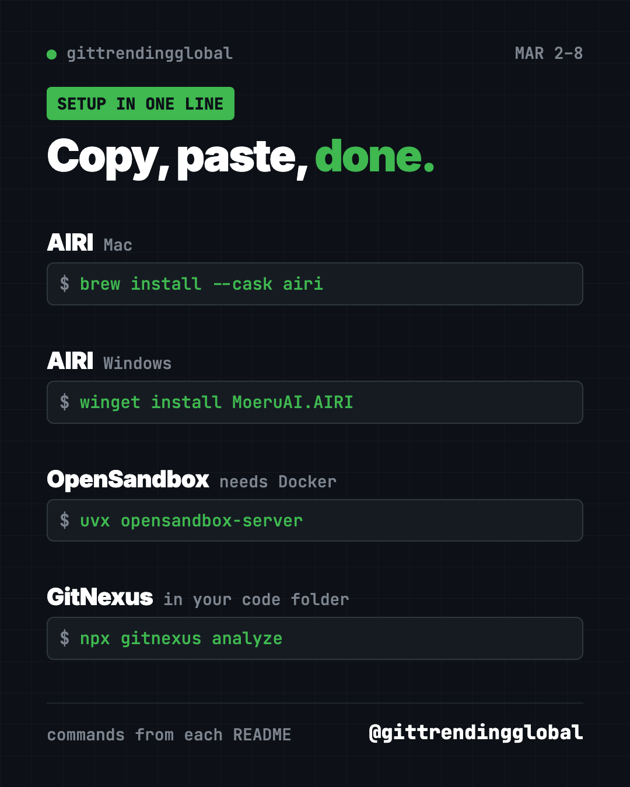

Home › Tools and repos › GitHub trending this week
GitHub Trending, Week of March 2, 2026: AIRI and More
- Published 15 Oct 2026
- Updated 16 Oct 2026
- 5 min read
- By the ITG Now team
GitHub trending week of March 2, 2026 was led by AIRI, a free AI character you can chat with and even play games with. OpenSandbox and GitNexus followed. Our data lists four repos for the week, and we skipped one of them on purpose.
So this is a short list, but a varied one: a digital friend, a safe room for AI code, and a map of your code. Here is each one, explained like you would to a friend.
Key takeaways
- AIRI gained about 11,400 stars. It is a self-hosted AI companion that can talk by voice and play Minecraft.
- OpenSandbox gives AI apps a sealed-off space to run code, so mistakes stay contained.
- GitNexus made the list for a second week in a row.
- We left out the second-place repo, a web scraping tool. Its headline feature is getting past anti-bot checks, which is against our rules.

GitHub trending week of March 2, 2026 side by side
| Rank | Repo | Stars gained | What it does | Platforms |
|---|---|---|---|---|
| 1 | AIRI | +11.4K | AI character for chat, voice and games | Web, Mac, Windows, Linux |
| 3 | OpenSandbox | +5.0K | Safe sandboxes where AI runs code | Docker, Kubernetes |
| 4 | GitNexus | +4.1K | Turns code into an explorable map | Browser, terminal |
Gains cover March 2 to 8, 2026. Totals were checked on GitHub on October 16, 2026. Rank 2 is missing on purpose, see below.
1. AIRI: a digital friend you host yourself
Stars: +11.4K this week · about 50K total today
What it is: AIRI is a free, open source AI character. The project is inspired by Neuro-sama, a well-known AI streamer. You can chat with AIRI by text or voice in real time. It can also play Minecraft, and Factorio support is in the works. It runs in a web browser, as a desktop app, and even on phones as a web app. You connect it to the AI model you like.
Who it's for: Gamers, streamers and anyone curious about AI characters with a personality.
One everyday use: Have AIRI keep you company and chat while you play Minecraft.
Install it: Try it in your browser first at airi.moeru.ai. To install it on a Mac, copy and paste this:
brew install --cask airi
On Windows, paste this:
winget install MoeruAI.AIRI
Help me install AIRI from https://github.com/moeru-ai/airi and connect it to a voice and a chat model I already have.
⚠️ Heads up: The AIRI README warns that the project has no official cryptocurrency or token. Ignore anyone selling one in its name.
Why we skipped the number 2 repo
Second place went to a web scraping framework, a tool that collects information from websites automatically. Scraping itself is common. But this project's README puts "bypassing" anti-bot protection, like Cloudflare's checks, front and center. We don't feature tools whose main pitch is getting around a site's defenses, so it is not on this list.
3. OpenSandbox: a safe room for AI code
Stars: +5.0K this week · about 16K total today
What it is: When an AI agent writes and runs code, you want it boxed in. OpenSandbox gives each agent its own isolated space. Inside, it can run commands, handle files, and even use a browser or desktop. Nothing leaks out to the rest of your system. You start on your laptop with Docker, then scale up to servers later. A "credential vault" lets agents use outside services without seeing your real passwords. The project started at Alibaba and now lives under the opensandbox-group account.
Who it's for: Developers building AI agents that need to run code or browse.
One everyday use: Let an AI agent test a script for you without risking your own files.
Install it: You need Docker and Python 3.10 or newer. Copy and paste this:
uvx opensandbox-server init-config ~/.sandbox.toml --example docker
uvx opensandbox-server
Then add the Python kit with uv pip install opensandbox.
Set up OpenSandbox locally with Docker, create one sandbox, and run "echo hello" inside it to prove it works.

4. GitNexus: back for another week
Stars: +4.1K this week · about 48K total today
What it is: GitNexus maps how every part of a codebase connects. Think of it as a subway map for code. Your AI helper uses the map to avoid breaking things. You can also explore the map yourself in a browser at gitnexus.vercel.app and ask it questions.
Who it's for: Developers on big projects, students learning how real software is built, and teams handing code to AI helpers.
One everyday use: Load a famous open source project in the web version and ask how its pieces fit together.
Install it: In your project folder, copy and paste this:
npx gitnexus analyze
Then run npx gitnexus setup once to connect it to Claude Code, Cursor or Codex.
Index this project with GitNexus and give me a plain-English tour of its five most important files.
💡 Tip: GitNexus is free for non-commercial use under the PolyForm Noncommercial license. Check the terms before using it at a paying job.
Which one should you try first?
- You want something fun: try AIRI in your browser. No install needed to start.
- You build AI agents: set up OpenSandbox before you let an agent run code.
- You work with code: run GitNexus on a project you know, then on one you don't.
FAQ
What topped GitHub trending the week of March 2, 2026?
AIRI gained the most stars, about 11,400, from March 2 to 8. OpenSandbox and GitNexus also made our list.
Is AIRI free?
Yes. AIRI is open source under the MIT license. The AI model you connect to it may have its own cost.
Why does an AI agent need a sandbox?
AI-written code can have bugs or do things you did not expect. A sandbox keeps those effects inside a sealed space.
Why did you leave out the second-place repo?
Its main selling point is getting past websites' anti-bot protection. We don't promote tools built around bypassing a site's defenses.
See the best GitHub repos of March 2026 and March 2026 in AI. The week before is February 23, and the week after is March 9.
Keep reading

Trending GitHub Repos October 2026: The Top 5 So Far
The trending GitHub repos of October 2026 so far: a free Photoshop-style editor, an AI art studio, a big AI model for gaming PCs and more, explained.

Trending GitHub Repos This Week, Oct 5 2026: The Top 5
Trending GitHub repos this week Oct 5 2026: Matt Pocock's skills, the openGym workout tracker, e2e testing, HyperFrames video and claude-mem memory.

GitHub Trending September 28, 2026: Hindsight and Paperclip
GitHub trending September 28 2026: Hindsight, Paperclip, NVIDIA's OpenShell and a free 542-lesson AI course, with setup steps for each.